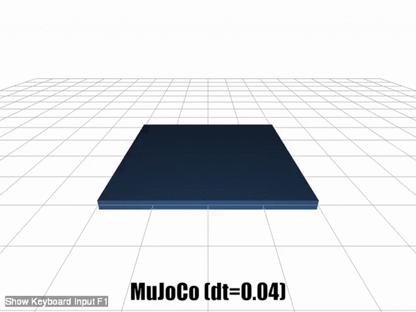
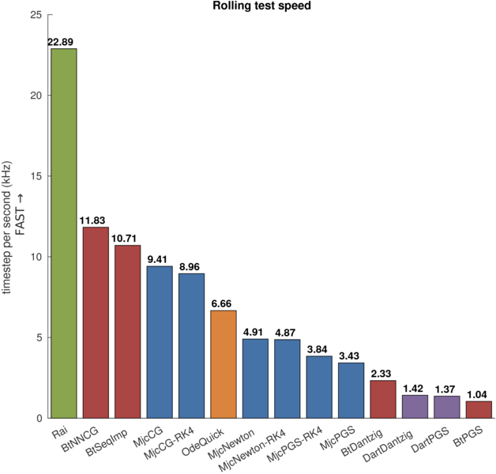

Rolling test is for testing frictional contact behaviors. The error is measured by comparing the simulation with the analytical solution.
The test focuses on:
The setup of the test is as follows:
Note that ODE standard solver fails without ERP, the box goes into the ground as this video.
The accuracy of RaiSim is bound by the contact solver threshold. This hyperparameter was not tunned for this test.
The pushing force resulted in no motion in ODE and Dart. However as the force is applied to y direction, the objects move. This is due to the pyramid shaped friction cone.
The objects oscillate significantly in MuJoCo as the time step size increases. It leads to an inaccurate solution.
Bullet and Rai are stable, accurate and fast as the following figure.
